In this chapter we continue the study of Collins et al.(missing reference) by considering the phase space structures that govern different reaction pathways and we then consider the influence of symmetry breaking, bifurcation, and energy on these phase space reaction pathways. In order to reveal the phase space geometry we take advantage of lagrangian descriptors, which will allow us to reconstruct the phase space structures that govern the chemical reaction processes.
We focus our attention on the Hamiltonian dynamics that takes place in a PES with four wells as a basic model for isomerization dynamics. Each potential well corresponds to a equilibrium configuration of the molecule under study, and wells are separated by saddle critical points, which represent transition states. In this setup, we understand that reaction occurs when an initial condition that starts for instance in one of the wells of the PES is capable of evolving to a neighboring well by crossing the saddle critical point that connects both wells.
Consider the Hamiltonian:
\begin{equation} H(x,y,p_x,p_y) = \frac{1}{2}\left(p_x^2 + p_y^2\right) + V(x,y) \label{hamiltonian} \end{equation}where we have supposed for simplicity that the mass in each DoF is $m_x = m_y = 1$. The PES is defined as follows:
\begin{equation}\label{pes_model} V(x,y) = x^4 - \alpha x^2 - \delta x + y^4 - y^2 + \beta x^2 y^2 \end{equation}and $\delta$ represents the asymmetry parameter in the double well potential of the $x$ DoF. The dynamics of the Hamiltonian in Eq. \eqref{hamiltonian} is described by Hamilton's equations of motion:
\begin{equation} \begin{cases} \dot{x} = \dfrac{\partial H}{\partial p_x} = p_x \\[.4cm] \dot{y} = \dfrac{\partial H}{\partial p_y} = p_y \\[.4cm] \dot{p}_x = -\dfrac{\partial H}{\partial x} = -\dfrac{\partial V}{\partial x} = -4 x^3 + 2 \alpha x + \delta - 2 \beta x y^2 \\[.4cm] \dot{p}_y = -\dfrac{\partial H}{\partial y} = -\dfrac{\partial V}{\partial y} = -4 y^3 + 2 y - 2 \beta x^2 y \end{cases} \label{ham_eqs} \end{equation}Now we describe the dynamics of the Hamiltonian in Eq. \eqref{hamiltonian} in the case where both DoF are uncoupled, so that the coupling strength is $\beta = 0$. We start our analysis by focusing on the symmetric Hamiltonian with $\delta = 0$, and later we will move on to discuss the asymmetric case.
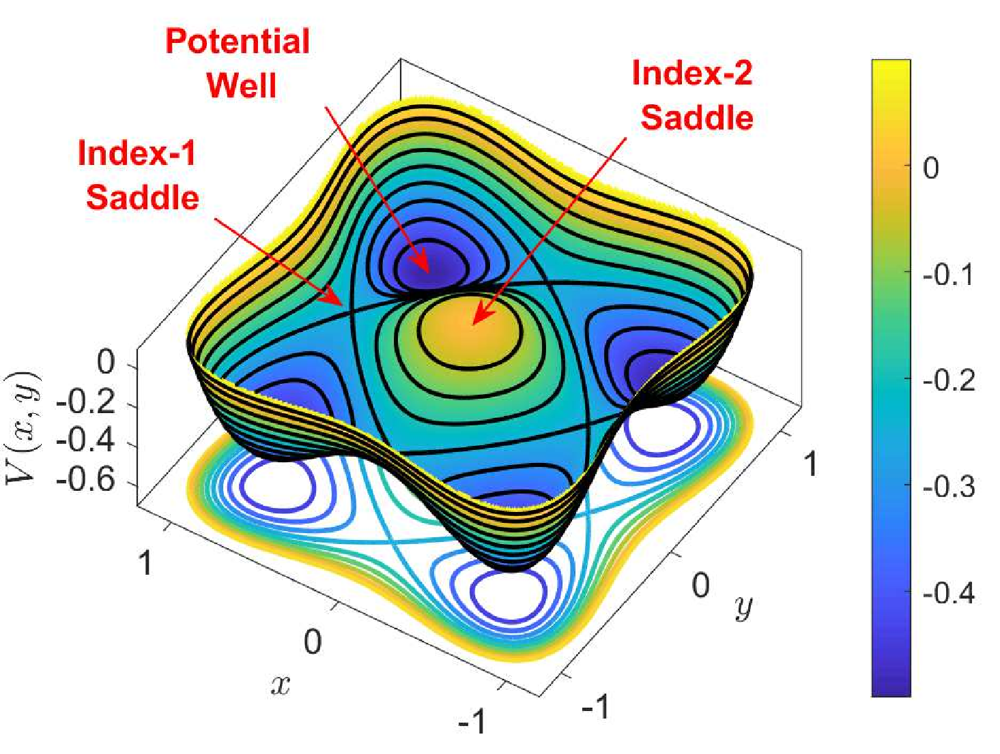 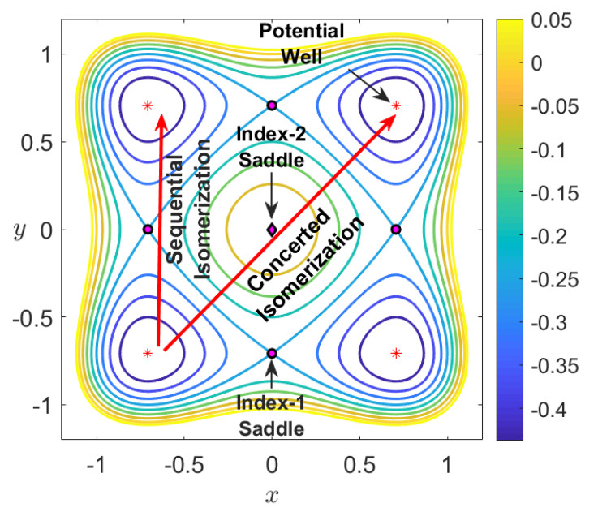
\label{fig:PES_isom_rout} \caption{Potential energy surface in Eq. \eqref{pes_model} for the symmetric uncoupled case.}
Consider the symmetric and uncoupled system with energy $H_0$. Since the system is conservative, dynamics is constrained to the three-dimensional energy hypersurface:
\begin{equation} \mathcal{S}(H_0) = \left\{ (x,y,p_x,p_y) \in \mathbb{R}^4 \; | \; H_0 = \frac{1}{2}\left(p_x^2+p_y^2\right) + x^4 - x^2 + y^4 - y^2 \right\} \end{equation}where the total energy can be split between both DoF to yield:
\begin{equation}\label{eqsymun} H(x,y,p_x,p_y) = H_{x}(x,p_x) + H_{y}(y,p_y) \end{equation}so that the partitioned energy is:
\begin{equation} H_{x}(x,p_x) = \frac{1}{2} \, p_x^2 + W(x) \quad,\quad H_{y}(y,p_y) = \frac{1}{2} \, p_y^2 + W(y) \end{equation}and the potential in each DoF is a double-well in the form:
\begin{equation} W(z) = z^4 - z^2 \label{1D_potSymm} \end{equation}Therefore, the symmetric and uncoupled system is integrable, as the energy in each DOF is conserved, and thus we have two independent constants of the motion, implying that all motion is regular and no chaotic dynamics is allowed. The Hill's region, which has its origins in Celestial Mechanics, is defined as the intersection of the energy hypersurface with configuration space, that is:
\begin{equation} \mathcal{C}(H_0) = \left\{ (x,y,p_x,p_y) \in \mathbb{R}^4 \; | \; x^4 - x^2 + y^4 - y^2 \leq H_0 \right\} \end{equation}This region determines the energetically allowed configurations for the DoFs of the system, and all the points outside the Hill's region are energetically forbidden. The boundary of the Hill's region, $\partial \mathcal{C}(H_0)$, is known in the literature as the zero velocity curve and corresponds to phase space points for which kinetic energy is zero.
In order to determine the phase space structures that characterize isomerization dynamics, we need to look first at the equilibrium points of Hamilton's equations. A phase space point $\mathbf{x}_e = (x_e,y_e,p_{x,e},p_{y,e})$ is an equilibrium of Eq. \eqref{hameqs} when it satisfies $p{x,e} = p_{y,e} = 0$ and $\nabla V(x_e,y_e) = \mathbf{0}$. The local stability of this stationary point is determined by the eigenvalues of the Jacobian matrix obtained by linearizing Hamilton's equations in its neighborhood. In the symmetric and uncoupled system, we have 9 equilibrium points with configuration coordinates and energies given below:
- Four potential wells at the points $ \left(\pm\sqrt{2}/2,\pm\sqrt{2}/2\right) $ with energies $ V(\pm\sqrt{2}/2,\pm\sqrt{2}/2) = -1/2 $.
- Four index-1 saddles located at $ (\pm\sqrt{2}/2,0)$, $(0,\pm\sqrt{2}/2) $ with energies $ V(\pm\sqrt{2}/2,0) = V(0,\pm\sqrt{2}/2) = -1/4 $.
- One index-2 saddle at the origin with energy $ V(0,0) = 0 $.
Potential wells of a PES correspond to center-stability equilibrium points of the Hamiltonian, and are characterized by the fact that the Hessian matrix of the PES evaluated at these critical points, denoted by $\text{Hess}_V$, has a pair of real and positive eigenvalues. This results in the Jacobian of the linearization having two pairs of complex (and purely imaginary) eigenvalues, which yields quasiperiodic motion in their neighborhood. In the context of chemical reaction dynamics, potential wells correspond to stable isomer configurations of the molecule under study. On the other hand, index-1 saddles of the PES are identified with saddle points of the potential energy landscape, and the associated phase space equilibrium point is of saddle-center stability type. This means that $\text{Hess}_V$ has two real eigenvalues of different sign, which is equivalent to the Jacobian having a pair of real eigenvalues of opposite sign and a pair of purely imaginary eigenvalues. Geometrically, an index-1 saddle is a local maximum in one direction and a local minimum in a perpendicular direction, as seen in the normal coordinates associated to the eigenvectors. Moreover, the eigenvector pointing in the maximum direction can be taken as a local approximation to define the reaction coordinate. The role that the index-1 saddles have in the model PES for isomerization that we consider is to connect pairs of wells, and therefore, they control access of phase space trajectories from well to well. From the perspective of chemical reactions, index-1 saddles are identified with transition state configurations of the given molecule, and, as we will see shortly, the phase space structures they give rise to are essential for the accurate computation of chemical reaction rates. Finally, index-2 saddles of a two-dimensional PES have the geometrical shape of a local maximum, i.e. a 'hilltop', which is characterized by the fact that the Hessian of the PES has two real and negative eigenvalues. This implies that when we linearize Hamilton's equations about this type of equilibrium point, the Jacobian yields two pairs of real eigenvalues, each pair having opposite signs. Thus, their stability is of saddle-saddle type, which has the dynamical effect of deflecting incoming trajectories in the neighborhood of an index-2 saddle at an exponential rate.
At this point, it is important to define what we mean for a trajectory to be trapped in one of the wells of the PES. From the energy landscape displayed in Fig. \ref{fig:PES_isom_rout}, this concept can be determined by studying the change in the sign of the configuration coordinates $x$ or $y$. For example, if we focus on the lower-left well, we can say that a trajectory is trapped in that well when the configuration coordinates of both $x$ and $y$ DoF remain negative during its evolution. Moreover, in this setup we can identify reactive trajectories as those that move from one well to another along their evolution. Since we are dealing in this case with a symmetric PES with respect to the origin, and there is one well in each quadrant, reaction would imply a change in the sign of one of the configuration coordinates of the trajectory. Notice that two types of reactive trajectories are possible when considering an initial condition starting on the lower-left well whose potential destination is the upper-right well. First, we could have sequential isomerization which implies transition from the lower-left well to an adjacent well through the phase space bottleneck region in the neighborhood of the index-1 saddle point that sits between both wells. This situation is only possible given that the system has enough energy to surmount the energy barrier (the energy of the index-1 saddle). A second alternative for reaching the upper-right well from the lower-left well is that trajectories cross directly through the index-2 saddle located at the origin (the hilltop of the PES), which is known as concerted isomerization. For an illustration of these two isomerization processes refer to Fig. \ref{fig:PES_isom_rout}.
We describe next the isomerization dynamics for the symmetric and uncoupled Hamiltonian system in terms of the phase space geometrical structures associated to the index-1 and index-2 saddles present in the model PES. We begin our discussion by fixing a value for the total energy of the system $H_0$. As we have mentioned earlier, this energy is distributed among both DoF, so that we can write $H_0 = H_{x,0} + H_{y,0}$ where $H_{x,0} $ and $H_{y,0}$ are the energies in the $x$ and $y$ DoFs respectively. We discuss some of the different cases in terms of the energy below:
Energy Level $(-1/2 \leq H_0 \leq -1/4)$: For this case the wells of the PES are isolated from each other since the energy of the system is below that of the index-1 saddles that interconnect the wells. Therefore, motion of an initial condition that starts in one of the wells will remain trapped in that well forever, displaying librational quasiperiodic motion.
Energy Level $(-1/4 < H_0 \leq 0)$: In this situation the energy is above that of any of the index-1 saddles in the PES, but below the energy of the index-2 saddle at the origin. Therefore, all potential wells are connected and isomerization can take place. This allows the transit of trajectories from well to well through the phase space bottlenecks that open in the neigborhood of the equilibrium points associated to index-1 saddles. However, the index-2 saddle region of the PES is energetically forbidden, and hence, only sequential isomerization is allowed. Given that the system is completely symmetric in this case, in order to describe the phase space structures that govern isomerization dynamics and characterize the bottleneck regions in the vicinity of the index-1 saddles of the PES, we focus our analysis on the equilibrium point $(0,\sqrt{2}/2,0,0)$ associated to the upper index-1 saddle, separating the upper-left and upper-right wells. This stationary point has saddle-center stability.
We will introduce now the dynamical concepts. The phase space dividing surface separating the upper-left from the upper-right well regions of the PES is also defined in this situation by intersecting the energy surface with the slice $x = 0$, that is:
\begin{equation}\label{ds_sym_unc} \mathcal{D}\left(H_0\right) = \mathcal{S}\left(H_0\right) \cap \lbrace x = 0 \rbrace = \left\{\left(x,y,p_x,p_y\right) \in \mathbb{R}^4 \; \bigg| \; H_0 = \frac{1}{2}\left(p_x^2+p_y^2\right) + y^4 - y^2 \;,\; x = 0 \right\} \end{equation}which is a non-invariant surface with the local non-recrossing property. Moreover, it has the topology of a sphere $S^2$ with two hemispheres, known as the forward and backward dividing surface. They are given by:
\begin{equation} \begin{split} \mathcal{D}_{f}(H_0) &= \left\{\left(x,y,p_x,p_y\right) \in \mathbb{R}^4 \; \bigg| \; H_0 = \frac{1}{2}\left(p_x^2+p_y^2\right) + y^4 - y^2 \;,\; x = 0 \;,\; p_x > 0 \right\} \\ \mathcal{D}_{b}(H_0) &= \left\{\left(x,y,p_x,p_y\right) \in \mathbb{R}^4 \; \bigg| \; H_0 = \frac{1}{2}\left(p_x^2+p_y^2\right) + y^4 - y^2 \;,\; x = 0 \;,\; p_x < 0 \right\} \end{split} \end{equation}The two hemispheres meet at the equator, which is a NHIM (or an UPO), with the form:
\begin{equation} \mathcal{N}(H_0) = \left\{\left(x,y,p_y,p_y\right) \in \mathbb{R}^4 \; \bigg| \; H_0 = \frac{p_y^2}{2} + y^4 - y^2 \;,\; x = p_x = 0 \right\} \end{equation}and has the topology of a circle $S^1$. The NHIM has stable and unstable manifolds:
\begin{equation} \mathcal{W}^{u}(H_0) = \mathcal{W}^{s}(H_0) = \left\{\left(x,y,p_y,p_y\right) \in \mathbb{R}^4 \; \bigg| \; H_y = \frac{p_y^2}{2} + y^4 - y^2 = H_0 \;,\; H_x = \frac{p_x^2}{2} + x^4 - x^2 = 0 \right\} \end{equation}and topologically they have the structure of $S^1 \times \mathbb{R}$, representing tube or cylindrical manifolds. Observe that for the symmetric and uncoupled case that we are analyzing they have a homoclinic structure in phase space. All these relevant phase space structures that are responsible for the reaction mechanisms in phase space through the bottleneck that connects the upper-left ad upper-right wells of the PES are depicted in Fig. \ref{fig:phasePort_1DoF_symm}.
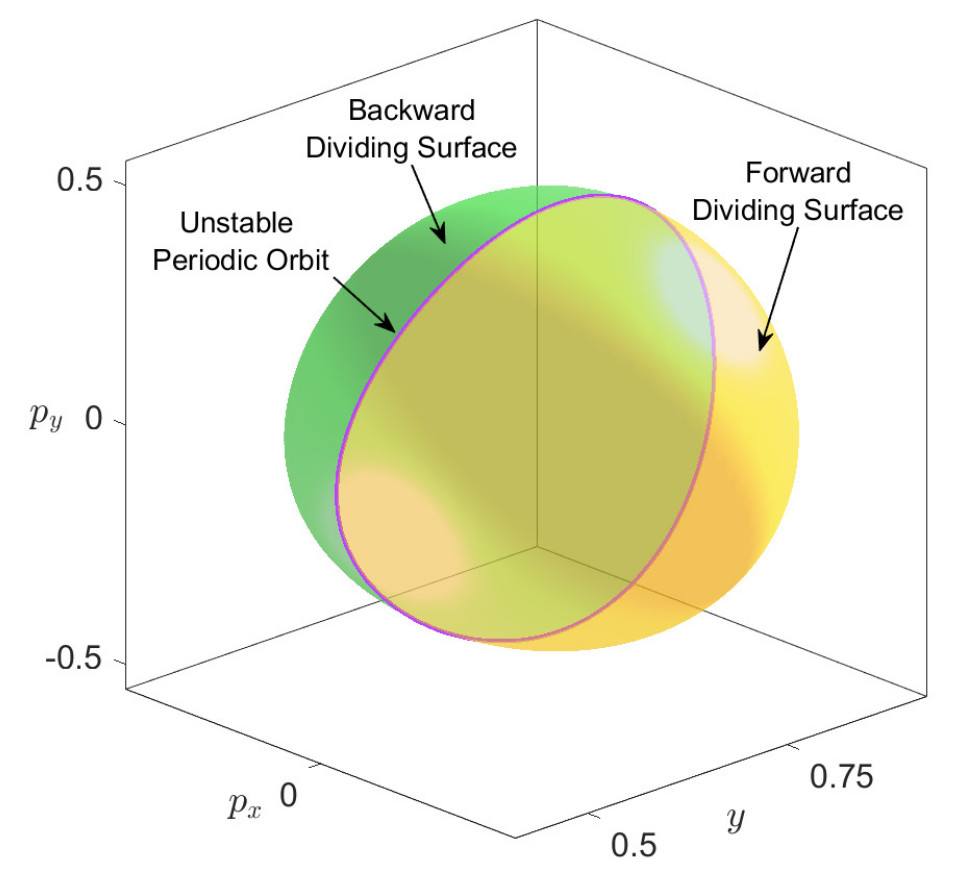 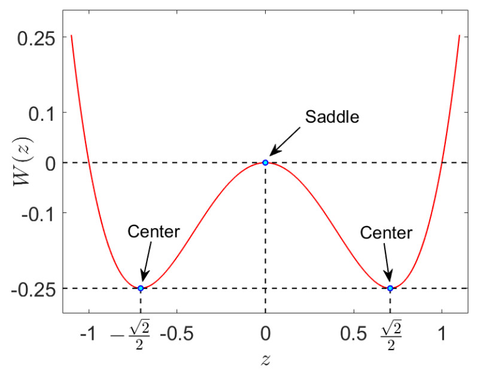 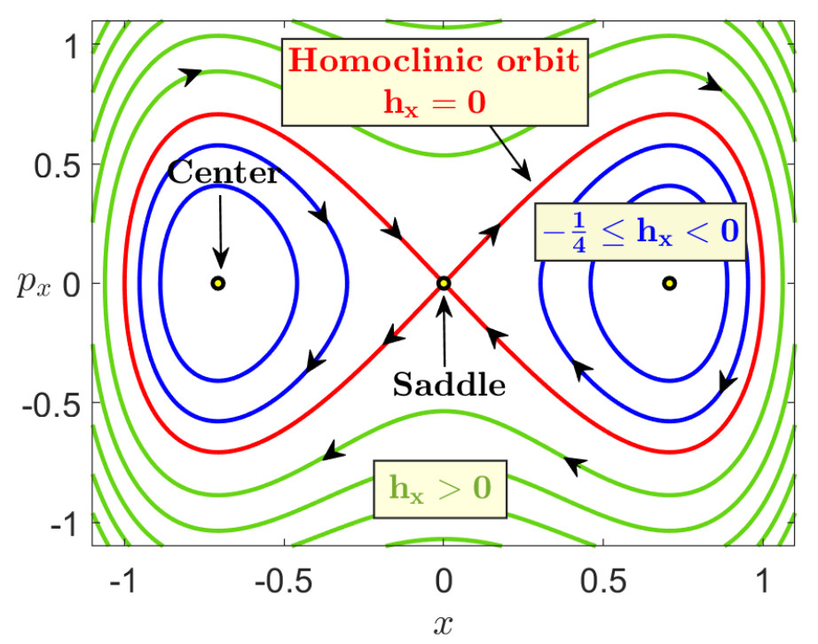 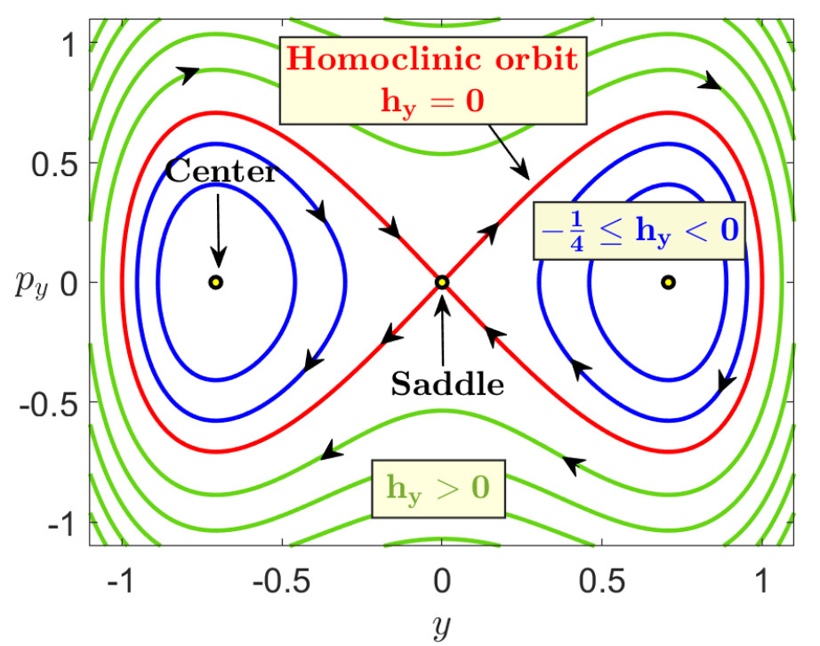 \label{fig:phasePort_1DoF_symm} \caption{A) Dividing surface described in Eq. \eqref{ds_sym_unc} for the symmetric uncoupled Hamiltonian system with energy $H_0 = -0.15$ in the neighborhood of the equilibrium point $\mathbf{x}_e = (0,\sqrt{2}/2,0,0)$. B) Symmetric double well potential given in Eq. \eqref{1D_potSymm}. C) and D) depict the phase portraits for the $x-p_x$ and $y-p_y$ planes respectively. We have marked with a magenta line the dividing surface $x = 0$ that separates the upper-left and upper-right wells of the PES.}
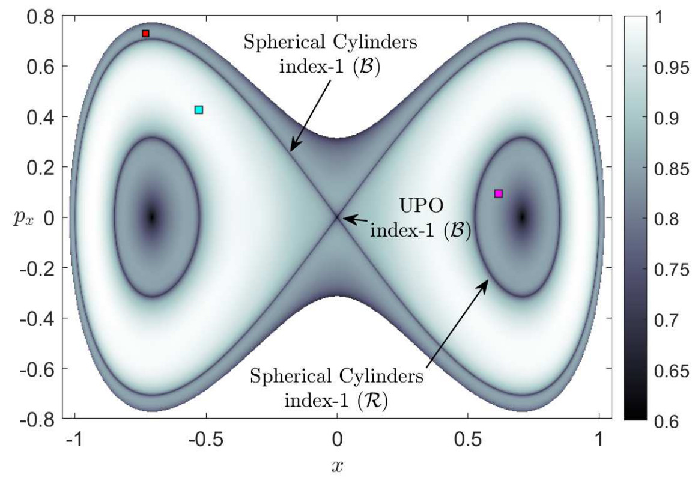 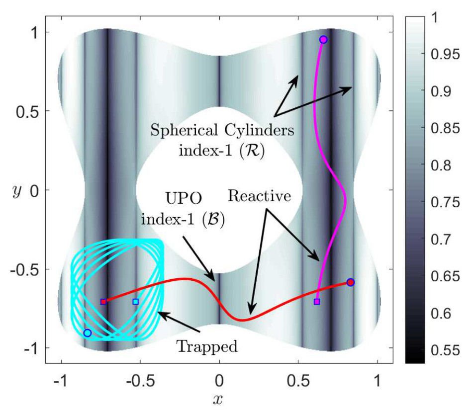 \label{fig:LD_sym_h_neg} \caption{Phase space structures at energy $H = -0.2$. A) LDs calculated using the p-norm definition, with $p = 1/2$, integration time $\tau = 5$ on the phase space slice $y = -1/\sqrt{2}$ for the symmetric uncoupled Hamiltonian in Eq. (\ref{eqsymun}). B) Dynamical evolution of the initial conditions selected in panel A.}
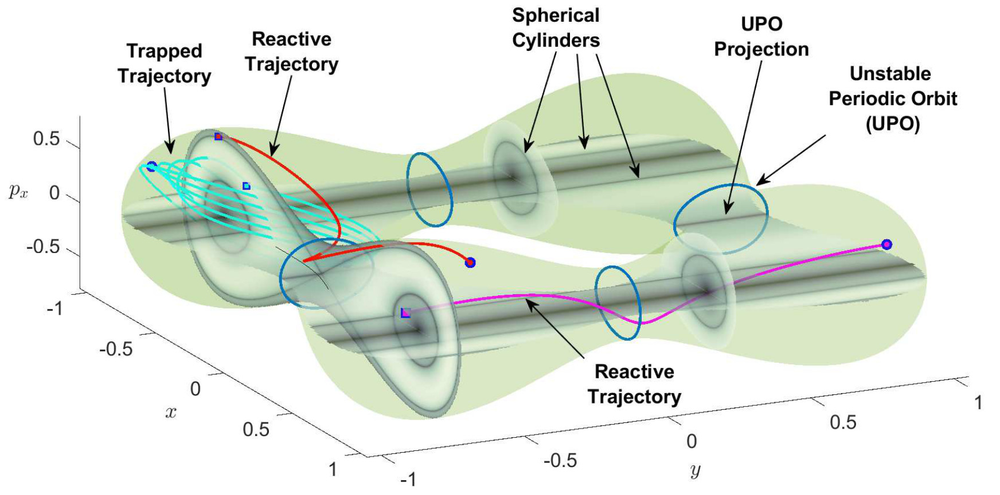 \label{fig:LD_pot_neg} \caption{Potential energy surface for the symmetric uncoupled Hamiltonian in Eq. (\ref{eqsymun}) at energy $H = -0.2$.}
We will describe now the phase space dynamics. Since the Hamiltonian is separable, the energy of the system can naturally partitioned between each DoF, that is, $H_{0}=H_{x,0}+H_{y,0}$. By looking at the phase portraits in Fig \ref{fig:phasePort_1DoF_symm} we will discuss the different cases:
$h_x \, , \, h_y < 0$: Since this energy levels correspond to trajectories inside the homoclinic curve in the phase portraits (B,D) depicted in Fig \ref{fig:phasePort_1DoF_symm}, then we know that neither $x$ nor $y$ will change sign, and this means that trajectories will be trapped in the lower-right well.
$h_x < 0 \, , \, h_y > 0$: Since the energy in the $y$ DoF is positive, this means we are outside the separatrix in the $y-p_y$ plane, and thus the trajectory will be periodic in $y$ and the sign of $y$ changes along the trajectory. Moreover, since the energy in $x$ is negative, this gives that we are inside the separatrix in the $x-p_x$ plane, corresponding to $x$ not changing sign along the trajectory evolution. Consequently, we will have trajectories that move through the bottleneck corresponding to the right index-1 back and forth between the lower-right and upper-right wells.
$h_x > 0 \, , \, h_y < 0$: Since the energy in the $x$ DoF is positive, this means we are outside the separatrix in the $x-p_x$ plane, and thus the trajectory will be periodic in $x$ and the sign of $x$ changes along the trajectory. Moreover, since the energy in $y$ is negative, this gives that we are inside the separatrix in the $y-p_y$ plane, corresponding to $y$ not changing sign along the trajectory evolution. Consequently, we will have trajectories that move through the bottleneck corresponding to the bottom index-1 back and forth between the lower-right and lower-left wells.
$h_x = 0 \, , \, h_y < 0$: Since the energy in the $x$ DoF is zero, this means we are on the separatrix in the $x-p_x$ plane, and thus the trajectory will not change sign in $x$ and it will asymptotically approach $x = 0$. Moreover, since the energy in $y$ is negative, this gives that we are inside the separatrix in the $y-p_y$ plane, corresponding to $y$ not changing sign along the trajectory evolution. Consequently, we will have trajectories that evolve on the spherical cylinder of the bottom index-1 that will asymptotically approach the UPO.
$h_x < 0 \, , \, h_y = 0$: Since the energy in the $y$ DoF is zero, this means we are on the separatrix in the $y-p_y$ plane, and thus the trajectory will not change sign in $y$ and it will asymptotically approach $y = 0$. Moreover, since the energy in $x$ is negative, this gives that we are inside the separatrix in the $x-p_x$ plane, corresponding to $x$ not changing sign along the trajectory evolution. Consequently, we will have trajectories that evolve on the spherical cylinder of the right index-1 that will asymptotically approach the UPO.
So far we have discussed the nature of the trajectories for all the different cases of positive and negative total energy of the system. At this point we will explore the dynamics revealed by the Lagrangian descriptors (LDs) for the same cases of the total energy and conclude that the LDs recovers the same phase space as in Fig. \ref{fig:phasePort_1DoF_symm}. In Fig. \ref{fig:LD_sym_h_neg} we have calculated the LDs using a small integration time $\tau = 5$, for the phase space slice $y = -1/\sqrt{2}$ and for total energy $H = -0.2$. This energy is above the energy of all four index-1 saddles and below the energy of the index-2 saddle. Therefore all the wells of the potential are connected and reaction can take place by crossing the open bottleneck, which is the NHIM (UPO) and its stable and unstable manifolds (spherical cylinders) that coincide in this case, and passing from the $x>0$ to $x<0$ (or from $y>0$ to $y<0$ or vice versa) or vice versa. So these geometrical structures act as a 'reactive highway' allowing the system to transit from well to well which would correspond to a given molecule undergoing an isomerization reaction. Remember that since the chosen energy is below the energy of the index-2 saddle but above the energy of all four index-1 saddles this means that we can have sequential isomerization but the region in the neighborhood of the index-2 saddle is forbidden and hence the system cannot exhibit concerted isomerization. In particular in Fig. \ref{fig:LD_sym_hneg} (A) we can notice that the spherical cylinders of the left and right index-1 saddles do not intersect with the cylinders of the bottom index-1 saddle and that the phase space consists of three regions: 1) the spherical cylinder of the index-1 in the right, where if we pick an initial condition inside this region the trajectory, in the configuration space, will be reactive and it will move through the bottleneck (UPO), corresponding to the right index-1, back and forth between the lower-right and upper-right wells (magenta). This is because the y-coordinate change sign while the x-coordinate doesn't. We are outside of the separatrix in the $y-p{y}$ plane and the trajectory is periodic. On the other hand we are inside the separatrix in the $x-p{x}$ plane and hence the trajectory doesn't change sign in this direction. We should mention here that the boundary of the cylinders is the boundary of the energy. 2) The spherical cylinder of the index-1 on the bottom, where if we pick any initial condition inside this cylinder the trajectory will be reactive and it move through the bottleneck (UPO), corresponding to the bottom index-1, back and forth between the lower-right and lower-left wells (red). This is because the x-coordinate change sign while the y-coordinate doesn't. We are outside of the separatrix in the $x-p{x}$ plane and the trajectory is periodic. On the other hand we are inside the separatrix in the $y-p_{y}$ plane and hence the trajectory doesn't change sign in this direction. 3) The region inside the homoclinic curve, where if we pick an initial condition inside this region the trajectory will be trapped in the well (cyan) and they will never escape. In this case both the trajectories are inside the separatrix and hence non of them change sign. To summarize in this case, that the system is uncoupled, the stable and unstable manifolds of the UPOs of the index-1 saddles of the PES do not give rise to heteroclinic intersections, so that the dynamics of the system remains trapped in the lower-left well or it can exhibit sequential isomerization to the lower-right or upper-right well.
The potential energy surface for the symmetric case and for total energy $H = -0.2$, which is above the energy of all the index-1 saddles and below the energy of the index-2 saddle, is depicted in the Fig. \ref{fig:LD_pot_neg}, where we can see the reactive trajectories (red and magenta) in the spherical cylinders, which are impenetrable barriers on the constant energy surface and separating the reactive and non-reactive trajectories in the phase space, and the trapped trajectories (cyan) in one of the wells. Hence the cylinders determine the initial conditions that can pass through the bottleneck as they evolve in time. The method of LDs also detects the unstable periodic orbits (UPOs) of all the index-1 saddles that are normally hyperbolic invariant manifolds (NHIMs). The method of LDs recovers all the phase space structures that we described above.
We explore now the dynamics of the asymmetric and uncoupled system. Consider that the system has energy $H_0$, and since the DoFs are separable, we can decompose the total energy as $H_0 = H_{x,0} + H_{y,0}$. Moreover, the energy in each DoF can be written as:
\begin{equation}\label{eqasymun} H_{x}(x,p_x) = \frac{1}{2} \, p_x^2 + U(x) \quad,\quad H_{y}(y,p_y) = \frac{1}{2} \, p_y^2 + W(y) \end{equation}where the potential in the $x$ DoF is an asymmetric double-well in the form: \begin{equation}\label{potasymun} U(x) = x^4 - x^2 - \delta x \end{equation}
and $\delta$ represents the asymmetry parameter. The potential energy $W(y)$ of the $y$ DoF is a symmetric double well given by Eq. \eqref{1D_potSymm}. Energy conservation implies that phase space dynamics occurs in the three-dimensional energy hypersurface:
\begin{equation} \mathcal{S}(H_0) = \left\{ (x,y,p_x,p_y) \in \mathbb{R}^4 \; | \; H_0 = \frac{1}{2}\left(p_x^2+p_y^2\right) + x^4 - x^2 - \delta x + y^4 - y^2 \right\} \end{equation}We concentrate on describing the phase space structures that determine transport between the upper-left and upper-right well regions of the PES for values of the asymmetry parameter below that corresponding to the saddle-node bifurcation. The dividing surface separating both wells is defined in this situation by intersecting the energy surface with the slice $x = x_s$, and the value of $x_s$ is that of $x_2$ in Eq. \eqref{roots_cubic_asymm}, that is:
\begin{equation} \mathcal{D}\left(H_0\right) = \mathcal{S}\left(H_0\right) \cap \lbrace x = x_{s} \rbrace = \left\{(x,y,p_x,p_y) \in \mathbb{R}^4 \; \bigg| \; H_0 = \frac{1}{2}\left(p_x^2+p_y^2\right) + y^4 - y^2 - \frac{x_s}{2} \left(x_s + \frac{3\delta}{2}\right) \right\} \label{ds_asym_unc} \end{equation}where we have used that the potential energy $H_{x,s} = U(x_s) = x_s^4 - x_s^2 - \delta x_s = -x_s^2/2 - (3\delta/4) \, x_s$, a property that follows from the fact that $x_s$ is a critical point of $U(x)$. The dividing surface is non-invariant and has the local non-recrossing property. Moreover, it has the topology of a sphere $S^2$ with two hemispheres, the forward and backward dividing surfaces, given by:
\begin{equation} \begin{split} \mathcal{D}_{f}(H_0) &= \left\{(x,y,p_x,p_y) \in \mathbb{R}^4 \; \bigg| \; H_0 = \frac{1}{2}\left(p_x^2+p_y^2\right) + y^4 - y^2 - \frac{x_s}{2} \left(x_s + \frac{3\delta}{2}\right) \;,\; p_x > 0 \right\} \\ \mathcal{D}_{b}(H_0) &= \left\{(x,y,p_x,p_y) \in \mathbb{R}^4 \; \bigg| \; H_0 = \frac{1}{2}\left(p_x^2+p_y^2\right) + y^4 - y^2 - \frac{x_s}{2} \left(x_s + \frac{3\delta}{2}\right) \;,\; p_x < 0 \right\} \end{split} \end{equation}The two hemispheres meet at the equator, which is a NHIM (or an UPO) described by:
\begin{equation} \mathcal{N}(H_0) = \left\{(x,y,p_x,p_y) \in \mathbb{R}^4 \; \bigg| \; H_0 = \frac{1}{2} \, p_y^2 + y^4 - y^2 - \frac{x_s}{2} \left(x_s + \frac{3\delta}{2}\right) \;,\; p_x = 0 \right\} \end{equation}with the topology of a circle $S^1$. The NHIM has stable and unstable manifolds:
\begin{equation} \mathcal{W}^{u}(H_0) = \mathcal{W}^{s}(H_0) = \left\{\left(x,y,p_y,p_y\right) \in \mathbb{R}^4 \; \bigg| \; H_{y,0} = \frac{p_y^2}{2} + y^4 - y^2 \;,\; H_{x,s} = \frac{p_x^2}{2} + x^4 - x^2 - \delta x \right\} \end{equation}and topologically they have the structure of $S^1 \times \mathbb{R}$, representing tube or cylindrical manifolds. Observe that for the asymmetric and uncoupled case that we are analyzing they have a homoclinic structure in phase space. All these relevant phase space structures that are responsible for the reaction mechanisms in phase space through the bottleneck that connects the upper-left ad upper-right wells of the PES.
The equilibrium points $\mathbf{x}_e = (x_e,y_e,p_x^e,p_y^e)$ satisfy the equations:
\begin{equation} p_x^e = p_y^e = 0 \quad , \quad -4 y_e^3 + 2 y_e = 0 \quad , \quad 4 x_e^3 - 2 \alpha x_e - \delta = 0 \;. \end{equation}Solving for the $y$ DoF we get $y_e \in \lbrace -\sqrt{2}/2,0,\sqrt{2}/2 \rbrace$, and the $x$ DoF gives a cubic polynomial $f(x) = 4x^3 - 2 \alpha x - \delta$ whose roots can be obtained analytically using the formulas in \cite{brizzard2015}. If we take $\gamma$ such that $f^{\prime\prime}(\gamma) = 0$ and define:
\begin{equation} \mu = \sqrt{-\frac{1}{3}f^{\prime}(\gamma)} \quad,\quad \phi = \arccos\left(-\dfrac{f(\gamma)}{\mu^3}\right) \label{cubic_rules} \end{equation}then for this cubic polynomial we have that $\gamma = 0$ and therefore:
\begin{equation}
\mu = \sqrt{\dfrac{2\alpha}{3}} \quad,\quad \phi = \arccos \left( \left(\dfrac{3}{2\alpha} \right)^{3/2} \delta \right)
\end{equation}
The roots of the cubic polynomial have the form:
\begin{equation} \begin{cases} x_1 = \gamma + \mu \cos\left(\dfrac{\phi}{3}\right) = \mu \cos\left(\dfrac{\phi}{3}\right) \\[.3cm] x_{2,3} = \gamma - \mu \cos\left(\dfrac{\pi \pm \phi}{3}\right) = - \mu \cos\left(\dfrac{\pi \pm \phi}{3}\right) = -\dfrac{x_1}{2} \pm \dfrac{\mu\sqrt{3}}{2} \sin \left(\dfrac{\phi}{3}\right) \end{cases} \label{roots_cubic_asymm} \end{equation}Observe that the two roots $x_{2,3}$ merge into one, i.e. $x_{2,3} = -x_1/2$, when $\phi = 0$ and this occurs for:
\begin{equation} \left(\dfrac{3}{2\alpha} \right)^{3/2} \delta = 1 \quad \Leftrightarrow \quad \delta_c(\alpha) = \left(\dfrac{2\alpha}{3} \right)^{3/2} \label{crit_asym_uncoup} \end{equation}Consequently, there is a bifurcation (saddle-node) in the geometry of the potential energy corresponding to the $x$ DoF as the value of the asymmetry parameter $\delta$ is varied. If $\delta \in [0,\delta_c)$, then we have three real roots. At the critical values $\delta = \delta_c$, $x_2$ and $x_3$ merge and thus the cubic polynomial has two real roots $x_1 = \mu$ and $x_2 = x_3 = -\mu / 2 = -\sqrt{\alpha/6}$. Moreover, for values of the asymmetry parameter $\delta > \delta_c$ only the root $x_1$ remains. In summary, when $0 \leq \delta < \delta_c$, the PES has 9 critical points, for $\delta = \delta_c$ only 6 critical points remain, since in each line $y = -\sqrt{2}/2, \, 0, \, -\sqrt{2}/2$ two roots merge (we have three simultaneous saddle-node bifurcations). Finally, for $\delta > \delta_c$ we are left with 3 critical points of the PES. We give below the energies of the critical points of the PES:
\begin{eqnarray} (x_k,0) \quad ,& \quad &V(x_k,0) = -\dfrac{x_k}{2} \left(\alpha x_k + \dfrac{3\delta}{2}\right) \;,\quad k \in \lbrace 1,2,3 \rbrace \\[.2cm] \left(x_k,\pm \sqrt{2}/2\right) \quad ,& \quad &V(x_k,\pm \sqrt{2}/2) = -\dfrac{x_k}{2} \left(\alpha x_k + \dfrac{3}{2}\delta \right) - \frac{1}{4} \;,\quad k \in \lbrace 1,2,3 \rbrace \end{eqnarray}In particular, the energies of the critical points where the bifurcations take place is:
\begin{equation}\label{energyeq}
V(-\sqrt{\alpha/6},0) = \frac{\alpha^2}{12} \quad.\quad V(-\sqrt{\alpha/6},\pm \sqrt{2}/2) = \frac{\alpha^2-3}{12}
\end{equation}
In Fig. \ref{fig:asym_pot_difdelta} we show the potential energy surface for different values of $\delta$. We can see that for different $\delta$ the critical points vary. In the first row is depicted the surface for $\delta = 0.2 < \delta{c}$. In this case the PES has four minima (wells), four index-1 saddles and one index-2 saddle point ('hilltop'), notice that the location of the critical points is different than the symmetric case and the index-2 saddle is not at the begging of the axis (0,0) anymore. Another difference between this case and the symmetric one, is that the energies have changed and the index-1 saddles don't have equal energies anymore. When $\delta = \delta_{c}$ (second row) the PES has 6 critical points, we can see the creation of a cusp and the three critical points in the middle of the panel B have collide simultaneously, saddle node bifurcations, with the three critical points on the left of the panel B. In the last row we can see that after the bifurcation occurs for $\delta = 0.8$ the PES has only three critical points left, one index-1 saddle and the two wells on the right.
In Fig. \ref{fig:LD_delta_02} we calculate LDs for the fixed value of the asymmetric parameter $\delta = 0.2$ and for different energies. In particular in this figure we have calculated LDs for an integration time of $\tau = 5$ in the phase space slice $y = -1/\sqrt{2}$. We discuss the phase space structures for different energy values. For instance, in Fig. \ref{fig:LD_delta_02} A) we use an energy value of $H = -0.2$ which is below the energy of the left index-1 saddle and below the energy of the index-2 saddle. Hence, the bottleneck that connects the lower-left and upper-right wells is still closed. The only option for trajectories that start on the lower-left well is to be trapped in that well or to evolve to the lower-right well by crossing the bottom index-1 saddle. In panel B) we use an energy of $H=-0.1$ which is above the energy of the left index-1 and still below the energy of index-2 saddle. In this case trajectories starting on the lower-left well have three different types of motion. They can be trapped in the well forever, or they can move to the lower-right or upper-left wells, since the phase space bottleneck connecting the wells is now open. Therefore, trajectories can move between the wells and the system would show sequential isomerization.
In Fig. \ref{fig:LD_delta_crit} we illustrate the systems' behavior using LDs for $p = 1/2$ integration time $\tau = 10$ for the asymmetric and uncoupled case $\delta = \delta_c$ and for three different energies based on the equations (\ref{energyeq}) at the three bifurcations points, in particular we choose one energy $H = \alpha^{2}-3/12 =-1/6$ and one energy between $\alpha^{2}-3/12<H<\alpha^{2}/12$ that is $H = -1/12$. The magenta curve represents the energy boundary. For this value of $\delta$, that is the critical value, the three simultaneous saddle-node bifurcations have just occur and there are four wells and two index-1 saddles left. A) The energy of the system is $H = -1/6$ and corresponds to the phase space slice $y = -1/\sqrt{2}$. In this case we have two regions. One inside the spherical cylinder of the index-1 in the right and one outside of this cylinder, where is the trapping area. We choose an initial condition in each of these regions and in panel B we show their time evolution projected onto configuration space. The trajectory of any initial condition inside the spherical cylinder of index-1 (red) will remain inside the cylinder and move between the lower and upper wells in comparison to any trajectory starting outside of the cylinder will remain trapped in the well (blue), the coordinates don't change sign. C) The energy of the system is $H = -1/12$ and corresponds to the phase space slice $y = -1/\sqrt{2}$. In this case there are three regions. One inside the spherical cylinder of index-1, one area in the spherical cylinder of the parabolic point that is in the line of $x = x_{c}$ and one area outside of this. D) The phase space slide $p_y = 0$. Here we can see how the initial conditions from panel C evolve. The trajectory inside the parabolic spherical cylinder (cyan) will remain inside the cylinder, horizontal trapped motion. The initial condition (red) is trapping in the well. Finally the blue initial condition we move up and down between the two wells (sequential isomerization).
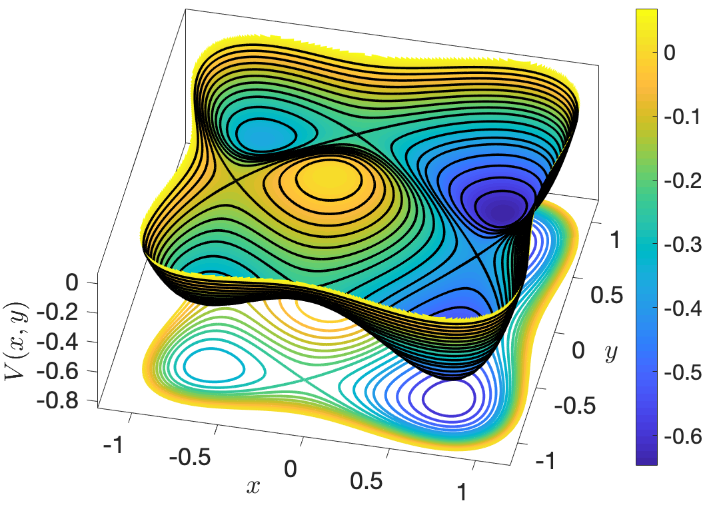 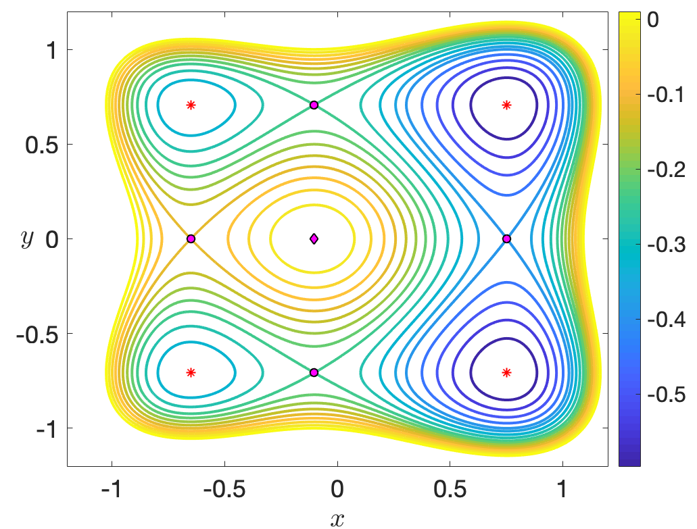 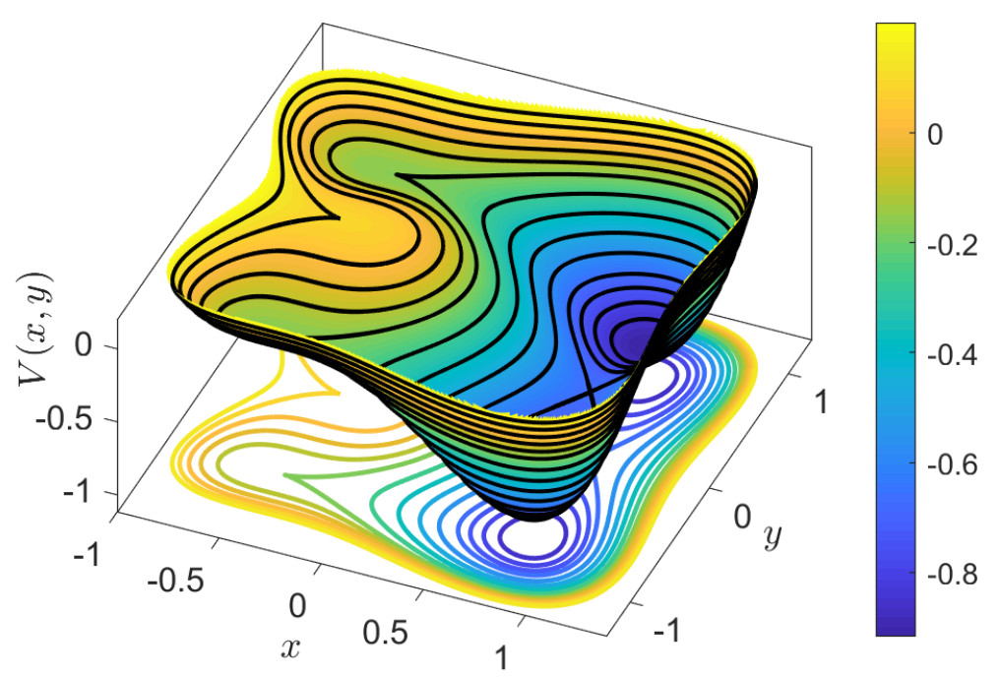 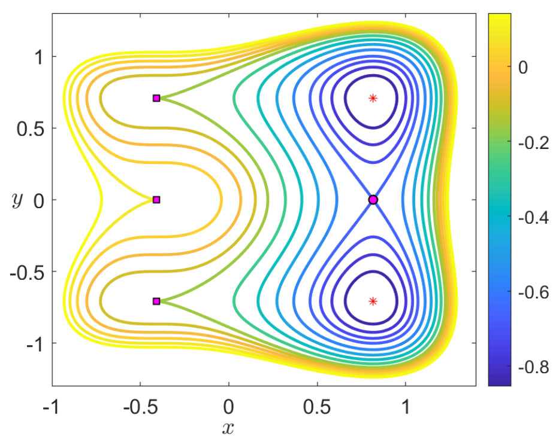 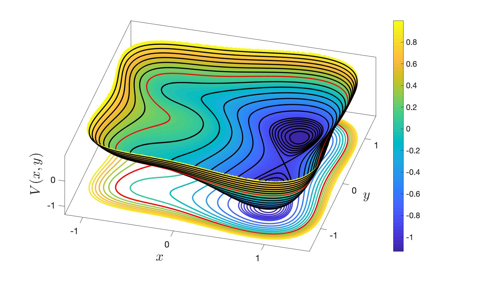 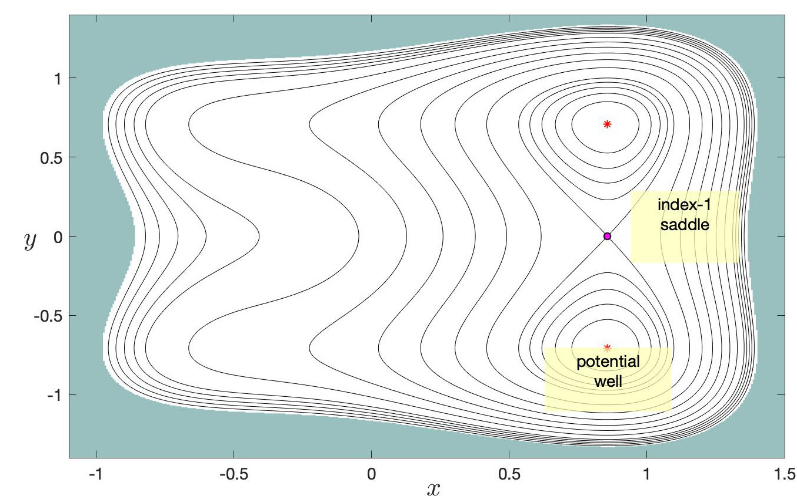 \label{fig:asym_pot_dif_delta} \caption{Potential energy surface on the left column and configuration space on the right column for the asymmetric uncoupled potential in Eq. (\ref{potasymun}) for different values of the asymmetric parameter $\delta$. A) and B) $\delta = 0.2 < \delta_c$, C) and D) $\delta = \delta_c$, E) and F) $\delta = 0.8 > \delta_c$.}
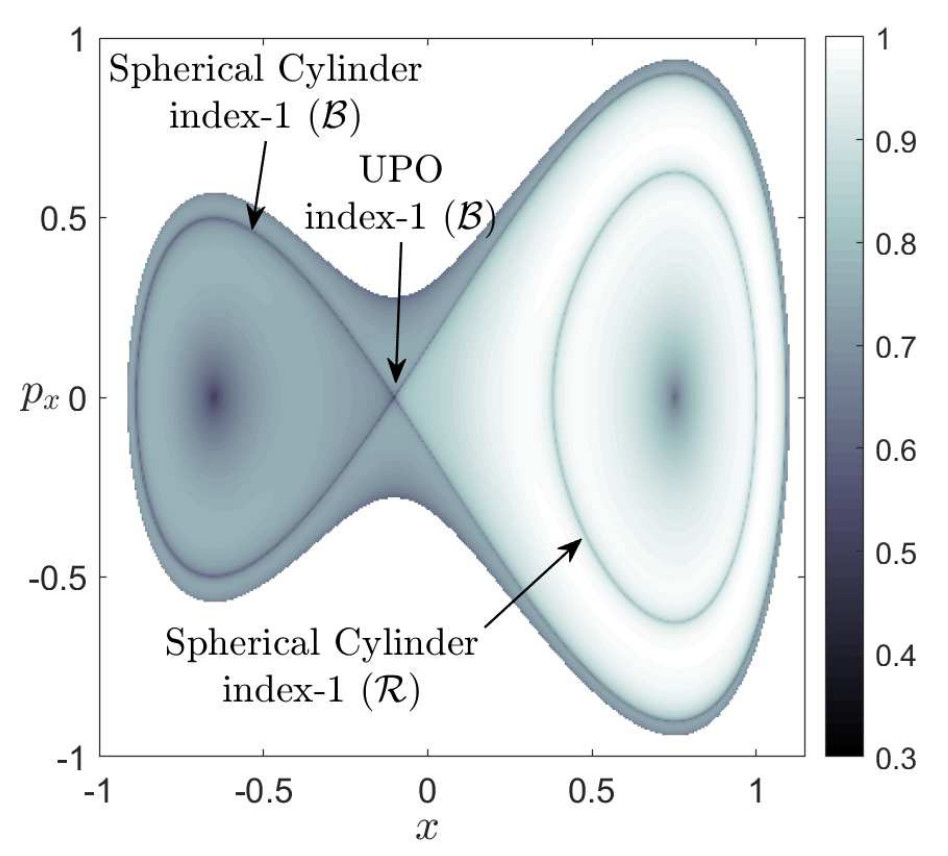 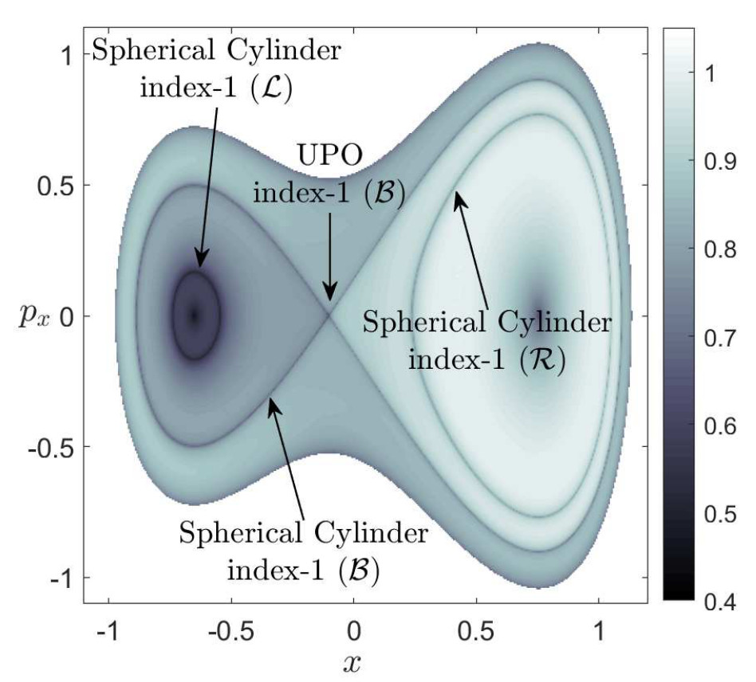 \label{fig:LD_delta_02} \caption{LDs calculated using $p = 1/2$ and $\tau = 5$ for the asymmetric uncoupled Hamiltonian in Eq. (\ref{eqasymun}) for $\delta = 0.2$. Energies are: A) $H = -0.2$. B) $H = -0.1$.}
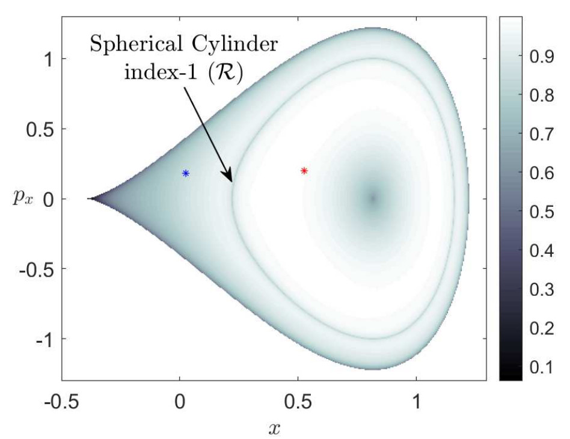 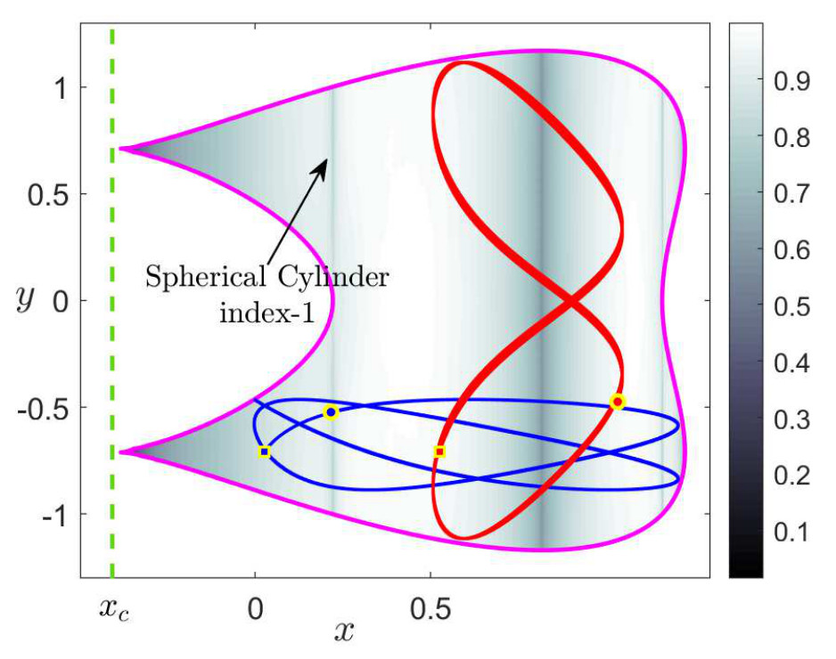 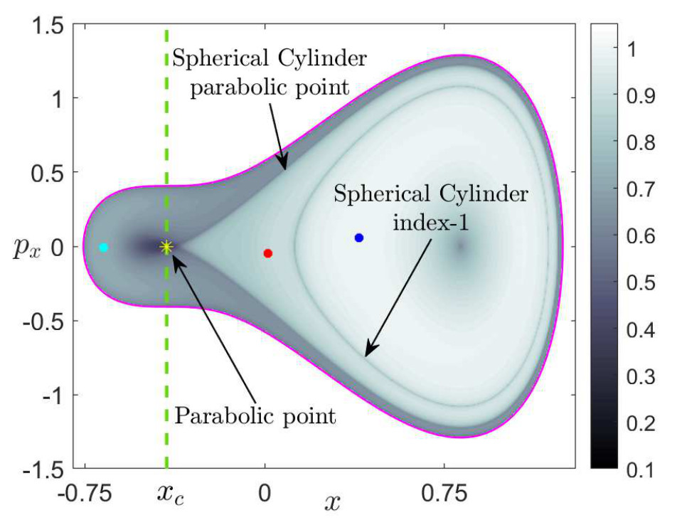 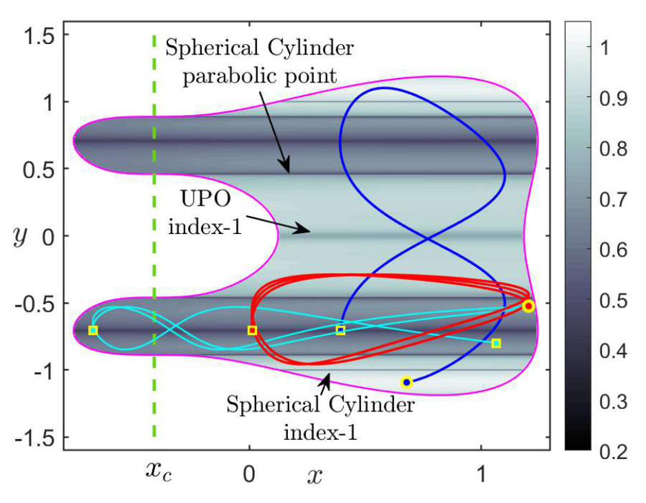 \label{fig:LD_delta_crit} \caption{LDs calculated using $p = 1/2$ for $\tau = 10$ in the asymmetric and uncoupled Hamiltonian in Eq. (\ref{eqasymun}) for $\delta = \delta_c$. The left column corresponds to the phase space slice $y = -1/\sqrt{2}$ and the right column is for $p_x = 0$, except panel D) that is for $p_y = 0$. The energy of the system is: A) and B) $H = -1/6$; C) and D) $H = -1/12$ and $\tau = 10$.}